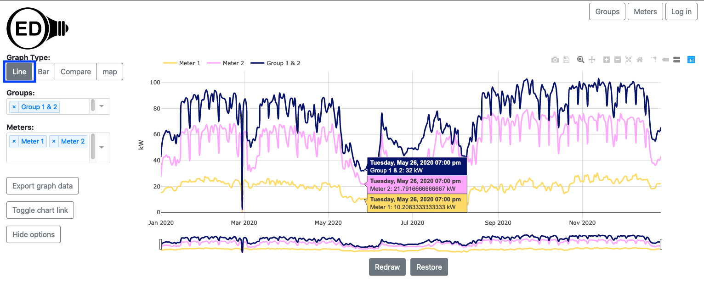
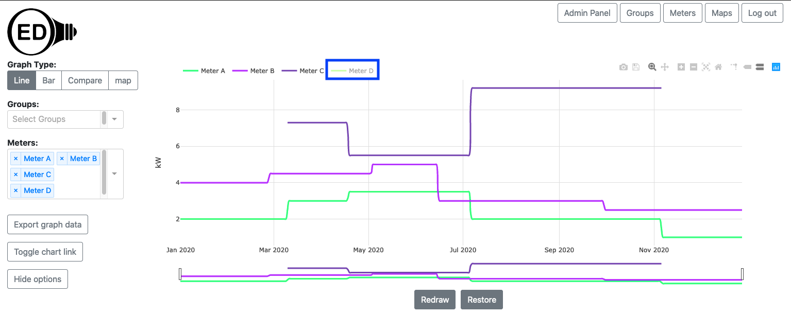
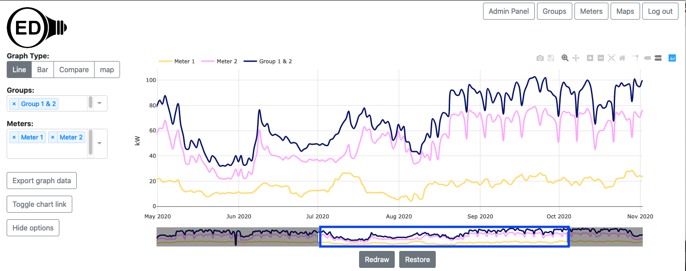
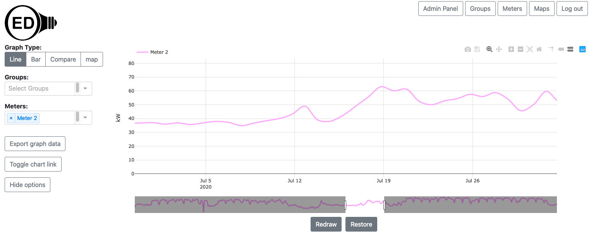
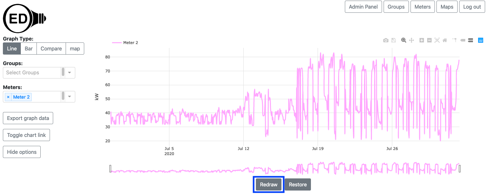
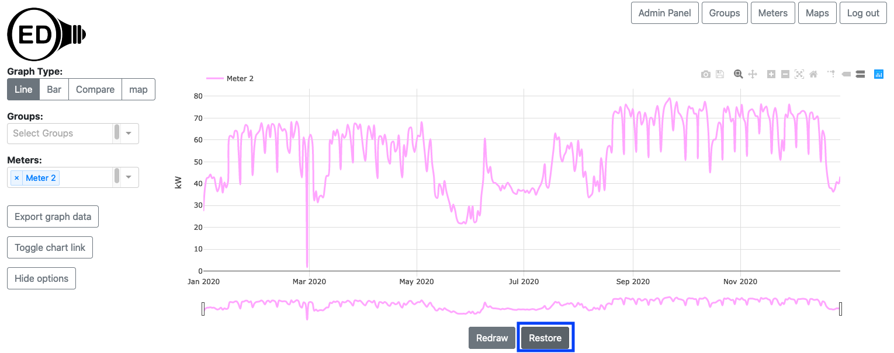
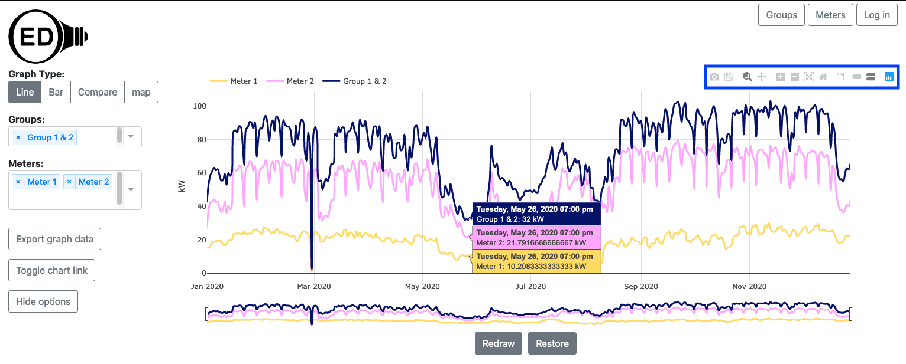

OED Documentation
Line Graphic
Version V0.6.0
The latest version of this page is V1.0.0.
Documentation overview
User documentation
Information
Meters/Groups
Other Features
Admin documentation
Documentation versions for this page
Overview
A line graphic shows each meter and group as a unique line showing usage across time. The following figure shows a line graphic of two meters (Meter 1 and Meter 2) and one group (Group 1 & 2) where the group contains the two meters (the one sample time point from the hover values of Group 1 & 2 is seen to be the sum of the two meters). Each line represents power usage at that time for the indicated meter/group, e.g., kW for electricity. To get this graphic, you click the "Line" choice (highlighted with a blue box). 
A line graphic can show an arbitrary choice and number of meters and groups. As described below, you can control the time frame (dates shown) on the line graphic.
Usage
You select the meters and/or groups to graph in the usual way. OED will display each meter and group as an individual line as shown in the figure above. For this section the graphics use synthetic data since values are easier to see. In this data, the meters have a constant value for long periods of time. Also, we will often use meters in these sample figures but the same ideas apply equally to groups. The time frame (days) shown on the x-axis will be the maximum time for all all meters and groups. If different meters and group have data for different time ranges then some lines will not span the entire length of the x-axis. The next figure shows this where the Meter C and Meter D do not span the full range of time on the graph so the beginning and end of the graphic does not have values for these two meters. 
This graphic also demonstrates another potential issue. If the values of one or more meters (or groups) are substantially less than another meter (or group) then the values for these meters will be very close to the x-axis. You can see these values by removing the values for the meters or groups with larger values. One way to do this is to remove a meter from graphing by clicking the "X" next to its name in the list (details on the meters/groups viewing help pages). This works but is slower since OED must recalculate the values via the server (see details below). It also means you won't see these meters/groups in other graphics since they were removed. A nice solution is to click on the name of the meter/group at the top of the line graphic. In the next figure, Meter D was clicked (highlighted with blue box) and the graph quickly redrew to what is shown with the y-axis scale re-calibrated for the remaining meters. The meter not being shown is in shadow font. You can click to remove as many lines as desired. 
You can click on a meter/group in shadow font to get it to quickly reappear on the line graphic. Note that going to another graphic will reset the lines shown so any hidden meters will show again.
Scrolling and zooming
Initially, OED shows the line graphic across all time that is available. Sometimes you want to look at a smaller time range. You can achieve this by zooming in the time (x) axis. This is done by clicking and dragging the rectangles with black border below the x-axis (highlighted with blue boxes in the figure below). As you slide the black rectangle, the parts of the x-axis (time) that is removed from the graph is show by a gray filled rectangle (highlighted in light blue boxes but goes also goes to center of rectangle but not highlighted since then hard to see other blue box). The white area between the gray rectangles is the time being shown. In the figure below the original time from of January through December was reduced to March through August. 
Note that the time range selected on a line graphic is also used for the Bar Graphic.
Once you are zoomed in so gray areas are shown for the removed time, you can click within these areas to modify the time range shown but the behavior is a little more complex and likely to take time to learn to use.
If only part of the time is shown, then you can scroll to see the other times. The total time displayed remains the same but the times included change as you scroll. You do this by clicking and dragging in the white area below the x-axis that shows the time being displayed (highlighted with blue box in the next figure). The next figure shows the process of dragging where the time displayed has now changed to May through October. 
If you zoom in significantly so the time range is much smaller than the original time range, the graph can become jagged due to having too few points. Also, you might want to return the graphic to its original, full time range. Both of these are discussed in the next section on the "Redraw" and "Restore" buttons.
Redraw and Restore buttons
The next figure shows the result of zooming in even farther so a limited time range of one month is shown. It also only shows one meter so the effects are easier to see. 
As you can see, the line has become vague because the time points are far apart. This happens due to the limited number of points available. (see below for the details of why). If you want to see this time range with more points then click the "Redraw" button (highlighted with a blue box) below the graph. The figure below shows the result of doing this where you can see that many more points are present. In this case it is using the original meter data which is spaced one hour apart. 
Note that once you do this, the time range is reset so you cannot zoom outward nor scroll to times outside the new range but you can zoom in farther so you can do this. If you want to see other time ranges, you can click the "Restore" button (highlighted with a blue box) and the graph will return to its original view with the time range including all meters. The result of doing this is shown in the next figure. Notice that it matches the Meter 2 line in the original figure at the top of this page. 
Details
Exporting graph data
You can export the data represented on a line graphic. You can use the line graph to get the time range and meters/groups you want. See the export help page for further information.
Plotly graph controls
As shown in the next figure, the Plotly (the underlying graphic package) graphical controls (highlighted by a blue box) are available for usage. The most useful might be the camera that allows you to download a PNG for the graph. If you hover over a Plotly control icon it will show its name. Note that using some of the other controls (zoom, pan, etc.) may cause unexpected behavior as OED is also using those features. 
Colors of lines
The color of lines is always the same for a given meter or group. This means everyone sees the same color for a given meter or group whenever it is graphed. The line colors are chosen to try to provide contrast between different lines. They are also designed to give some differentiation between meters and groups when possible. OED tries to show meters in lighter colors and groups in darker colors. This is not guaranteed as colors are reused between groups and meters if the number in either category becomes large. OED also tries to give a unique color to each line but that may not happen when the number of meters and groups is large. Note both of these depend on the number of meters and groups at the OED site and not the number being shown. Finally, a given meter or group will have the same color on the line, bar and map graphic.
Why do I need to Redraw and Restore?
OED is designed to be fast on any reasonable device. When you are zooming and scrolling within a line graphic, the work is all done in your web browser so it will have a very fast response rate. If OED recalculated the points shown as you zoomed/scrolled then it would be substantially slower, esp. if it needed to access the site's server to get new data. OED could try to determine when you are done zooming/scrolling and then recalculate the points but it is very difficult to determine when that has happened given users often pause during these operations. Thus, to be fast and allow you to get high quality line graphs, OED needs you to let it know when you are done and need the points displayed to be reset. The "Redraw" button is how you do that. You can also tell OED when you want to go back to the original graphic via the "Restore" button. This allows you to see all the data and/or zoom/scroll to other areas of the graph.
Why doesn't OED show all the meter/group data?
Meters often get a new data point every 15 to 60 minutes and groups inherit that value. This means a given meter or group can have a lot of data points. For example, a meter reading every 20 minutes for a year has over 26,000 data points. OED refers to these points as the original or raw meter data. There would be two main issues in showing you all the raw data. First, it would be significantly slower. All that data needs to be located in the OED database and then transferred across the network to your device. If you are on a mobile device you may be paying to transfer the data. Second, you would not be able to see all the points even if OED tried to graph them. Screen resolutions are in the hundreds to thousands of pixels (a single point on the screen) and the line graphics only get a subset of those pixels. That means OED cannot show more than hundreds to a few thousand points (if you have an HD screen). A massive number of points would be lost in viewing. Thus, OED averages the data on the site server to reduce the number of points it sends to your web browser for graphing. Thus, a point is the average energy usage across that time. Typically it averages across a day of data to be highly responsive. If you have limited data points for day averages then it will use smaller time intervals between points and will go to the original meter data when the number is small enough. This is still fast since the number of points to get is small and the number transmitted is also small. OED will average together multiple days if you have too many days to represent (if you are showing multiple years of data). These details are generally not important to you except to know that you are often looking at averaged data. Zooming in to a smaller time frame and redrawing or downloading the raw meter data for a graph are ways to see the original meter data.